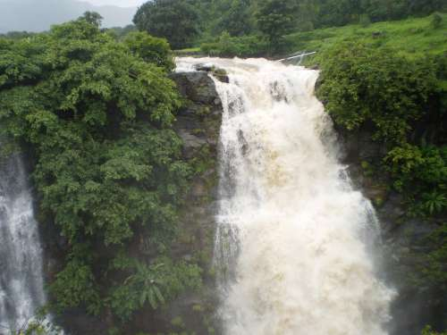

About Bhandardara

Bhandardara is a holiday resort village on the western ghat of India.The village is located in the Ahmednagar district of the state of Maharashtra, about 185 kilometers (115 mi) from Mumbai.
Bhandardara sits by the Pravara River, and is a blend of natural beauty, waterfalls, mountains, tranquility, greenery, invigorating air and pristine ambiance. The Bhandardara Lake and the Randha falls are major tourist attractions.
A village near Bhandardara
Village Folks at Bhandardara
Bhandardara is full of attractions – from Wilson Dam to Arthur Lake. As legend has it, Shri Agasti Rishi meditated here for a year, surviving only on water and air, pleased with this display of devotion, God came down to Earth and blessed Shri Agasti Rishi with a stream of the Ganges river, which is now known as the Pravara River.
From Bhandardara, you can climb up to see the Ratangad and Harishchandragad fort. Or, you can follow the trails that lead to Ajoba and Ghanchakkar peaks. Also, if you are up for a challenge, the highest peak in Maharashtra, Mount Kalsubai (1646 m), stands tall for you to conquer. The starting point of this challenging trek is Bari Village, located 12 km away from Bhandardara. Atop, there is a small temple and standing. Standing at the summit, you can have panoramic view of Sahyadris and Bhandardara.